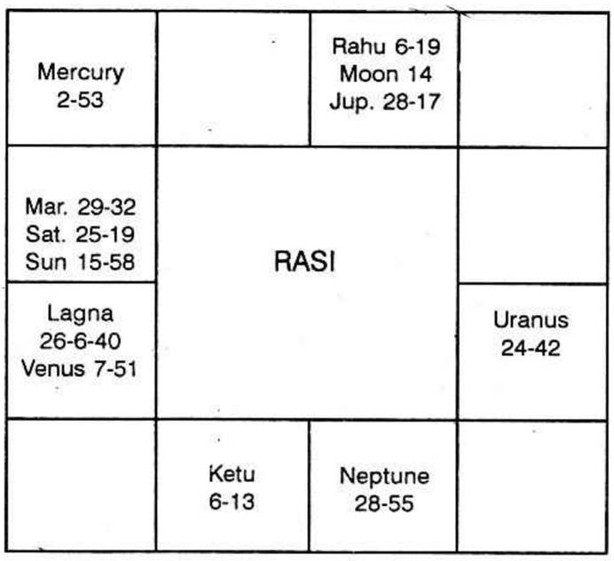

Rains to relieve the pains of the public and the Government to have its normal gains is the desire of one of the Highest officials in Madras.
Agricultural, food, water supply and the Electricity Departments, depending on the impounded reservoirs and lakes on the hills want timely rains.
Meteorological department is mostly similar to a newspaper giving the particulars after the event, maximum and minimum temperature, rainfall etc. If at all, only after a depression in the bay, they can expect the storm. They can say how much it has rained but they cannot foresee how much it would rain.
Astrology, after developing it, by carrying out a little research can clearly state, when and where, how much rain the people can have, years, decades and centuries in advance. Research is to be done by collecting the rainfall charts, noting down the position of planets and applying the rules given in Brihat Samhita, to definitely state the rainfall.
If it is found that there will be breaches, Engineers may be forewarned. Prevention is better than cure. A small sum spent on reinforcing the bund of the lake and the bank of the river will save the people from varieties of difficulties; no loss of life of the Villagers in the inundated areas; no loss of life of animals etc.; no loss of vegetables and other crops; no loss of building; no dislocation etc. It prevents loss and saves money.
The water supply department can regulate the supply.
The food department can avoid famine.
The electricity department can also make wide publicity much in advance and regulate the supply.
If mills are closed, so much of labour suffer without a job. The newspaper cuts the news: Publishers delay in bringing out the books – (I am one of the sufferers) – Those who want to buy electric motor for pump-sets may go in for Diesel oil engines and irrigate their field from wells in that year. Next year they can switch on to electric motor. What is the use of appointing one when one knows astrologically that he will fall ill from typhoid and for a month he will be absent. Instead appoint some one first and have your own man after he recovers from the disease.
Thus astrology can be made very useful to the Government and to the public. Indeed, some more research is needed.
To-day at 11.50 A.M., one of the important members, holding a very high position desirous of serving the public, most anxiously phoned and wanted to know how this year will be. He asked “Please say when there will be rain in the Nilgiris and in Mercara. Will it be sufficient? Will it be better than last year or worse?”
“Please give a number within 249, Sir.”
“206 please”
“I shall give a ring at 1 P.M. after my calculation”.
“Good or bad, please state as the planets portray”.
“Certainly”.
“Alright”.
The horoscope is as follows :-
For number 206, the Lagna will be 26°6′40″ in Capricorn.
Moon represents the nature of query. It is in its own constellation. It is a watery planet. So the question may be about water.
Varahamihira, Garga, Parasara, Kasyappa, Maya, Brihaspati have discussed about the Moon’s conjunction with Rohini to predict the good and bad effects of rain. Therefore Rohini indicates ‘Rains’.
To-day, it is Monday ruled by Moon (28-2-66). The star is ruled by Moon-Rohini. The sign is governed by Venus. Hence Venus and Moon rule the moment of query. Rohini is the star in which Lord Krishna was born and in His Time there was plenty of milk and food. Rohini itself suggests “Plenty”.

According to progression Moon conjoined Rahu seven months ago: therefore from August and upto this time the rains were scanty.
By progression Moon conjoins Jupiter in a year and next year 1967 March there will be unusual, precedent, uncommon heavy rains.
“It is a good news. But what will happen in between?”
Benefit is denoted by 11th house. 11th house to the 7th is the 5th house. It is occupied by Jupiter. Hence planets in the constellation of Jupiter and Jupiter itself indicate that in their conjoined periods and sub periods, and whenever planets transit their constellations, there will be good rains at the time they are in the sub of the significators.
It is found that unusually there will be clouds and occasional showers between 22-3-66 and 3-4-66. On 6-4-66, there will be good rains.
Between 24-4-66 and 19-5-66, there is no rains. Between 19-5-66 and 1-6-66, it starts raining. It increases. On 18-7-66 the lakes overflow.
Normal supply of electricity will be resumed on 10-7-66 and there will be no cut in the near future.
Further Moon conjunction, with Jupiter indicates that there will be expansion, improvement and addition to the present power houses. Mars, as lord of 11 aspecting Moon indicates (being a fiery planet) that you will erect Thermal station also. Mars, conjunction Saturn and Sun portray that from mine areas (Neyveli) you will get electricity to augment the supply.
(All these predictions came true).